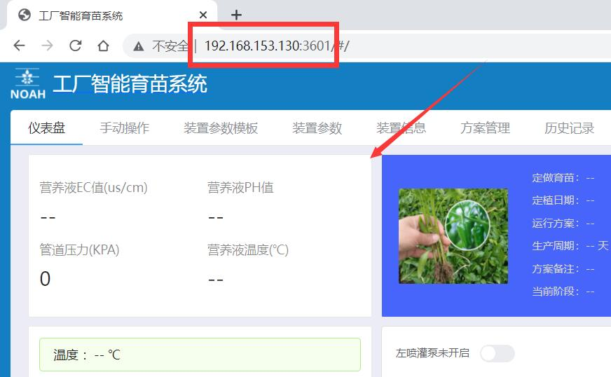

注：以下步骤均在本机上完成
step1.上载farm_service
在 WinSCP软件 中找到opt目录并进入。如图所示：
找到本机farm_service目录中的farm_service\dist\static\ip.js。如图：
打开该文件后将ip地址替换成ubuntu设置的ip,如图：
将本机farm_service目录上传到该目录。如图：
step2.安装node模块
打开 butty软件 并连接到服务器。如图：
输入命令 cd ../../opt/farm_service。如图：
输入命令 sudo npm install，并输入密码。如图：
step3.启动WEB服务
输入命令 sudo pm2 start /opt/farm_service/app_seedling.js --name SmartSeedling -i 0 --watch 。出现此界面，表示成功如图：
step4.启动历史存储服务
输入命令 sudo pm2 start /opt/farm_service/appWork.js --name seedlingWork --watch。出现此界面，表示成功如图：
step5.测试系统
在本地浏览器地址栏中，输入ubuntu的ip地址:3601。比如我的ubuntu系统ip为192.168.153.130，就在我的浏览器地址栏中输入http://192.168.153.130:3601。如图所示代表成功。
